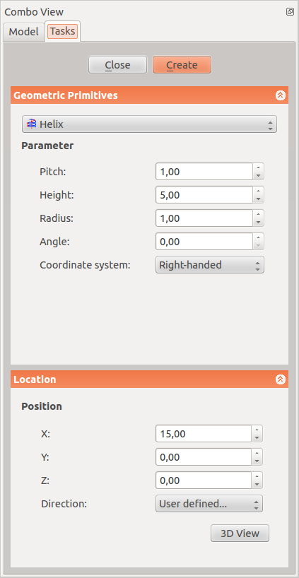

Popis
Na této stránce je vysvětleno jak editovat základní parametry šroubovice. Kliknete na ikonu  Základní geometrické tvary a na ikonu šroubovice
Základní geometrické tvary a na ikonu šroubovice  v rozbalovacím menu pro editování parametrů vytvářené šroubovice. Když jse nastavili všechny parametry, kliknete na tlačítko "Vytvořit" pro vykraeslení šroubovice. Once you have edited all the parameters click the button "create" to draw the helix.
v rozbalovacím menu pro editování parametrů vytvářené šroubovice. Když jse nastavili všechny parametry, kliknete na tlačítko "Vytvořit" pro vykraeslení šroubovice. Once you have edited all the parameters click the button "create" to draw the helix.
The Create Primitives dialogue can be accessed via the CreatePrimitives icon located in the Part menu or the Part toolbar, in the Part Workbench. A common usage for the Helix is for threads in conjunction with the sweep operation.
How to use
| 
|
Parameter
- Pitch:The pitch corresponds to the space between two consecutive "turns" of the helix measured along the main axis of the helix.
- Height: The height corresponds to the overall height of the helix measured along the main axis of the helix.
- Radius: The radius corresponds to the radius of the circle built by the helix by viewing the helix from the top / bottom.
- Angle: Per default the helix is built on a imaginary cylinder. With this option it is possible to build the helix on a imaginay conus. This angle corresponds to the angle of the conus. The value must be comprised between -90 deg and +90 deg.
- Right-handed or Left-handed: This parameter specifies the handedness of the helix.
Location
- X: The main axis of the helix will be translated along the x axis of the value you indicate in this field.
- Y: The main axis of the helix will be translated along the y axis of the value you indicate in this field.
- Z: The main axis of the helix will be translated along the z axis of the value you indicate in this field.
- Direction: Per default the main axis of the helix is the z axis. Here you have the possibility to edit the main axis of the helix. If you select the parameter "user defined..." , you will be invited to indicate the main axis of the helix by entering the coordinates of its vector.
- 3D View: allows you select center in the 3D view
|
Options
Vlastnosti
Když jste šroubovici vytvořili, máte ještě možnost upravit její parametry.

|
Parametry v tomto menu jsou podobné těm, které jsou popsány výše.
Základ
- Umístění: umožňuje posunovat nebo otáčet šroubovicí
- Úhel:
|
{kind=link}